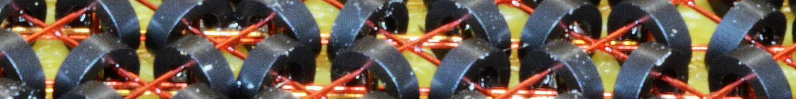
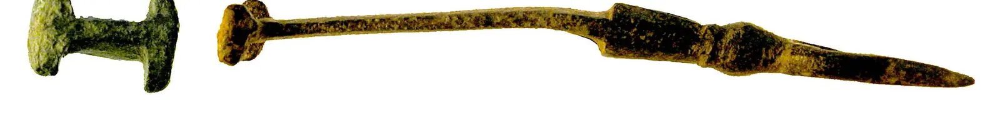

Образцы шапок глав Шапка стоит над заголовком главы. Вариант А нарисован для этой книги и перекрашивается вместе с темой; вариант Б — свободная фотография с подписью автора и лицензии. На телефоне шапка выше и показывает середину картинки. Переключите тему кнопкой вверху, чтобы сравнить оба варианта в тёмной.
Гл. 07 А. Рисунок
E E E E E E E O H E E E S E E E S E O E O E E O O O O H O E H E O E S O E E O E O S O O O O H E S H O O O O O E O H O S E O S 7. Память и сборка мусора
Б. Фото

Jud McCranie, CC BY-SA 4.0 7. Память и сборка мусора
Гл. 28 А. Рисунок
08 96 01 12 04 0a → ping · pong → 81 8d 37 fa 21 3d → grpc-status: 0 → 81 8d 37 fa 21 3d → 08 96 01 12 04 0a → 08 96 01 12 04 0a ← 81 8d 37 fa 21 3d ← {"method":"commit"} ← <soap:Envelope> ← {"method":"commit"} ← 08 96 01 12 04 0a ← <xs:element/> → ping · pong → grpc-status: 0 → 81 8d 37 fa 21 3d → POST /v1/payments → <soap:Envelope> → <xs:element/> → 28. gRPC, JSON-RPC, WebSocket, GraphQL, XML и SOAP
Б. Фото
Gary Langebartels / FortepanIowa, CC BY-SA 4.0 28. gRPC, JSON-RPC, WebSocket, GraphQL, XML и SOAP
Гл. 41 А. Рисунок
ca:75:c9:8c:07:0e:44:a5:81:31:d9:62:bf:40:33:45:18:a7:05:d1:9c:43:2d:0f:c7:02:42:ec:d8:00:ea:54:21:34:d2:d3:77:db:ed:e2:86:78:ca:c9:e2:65:60:75:f7:27:4f:a3:7c:3e:6f:cb:8b:05:44:5d:21:b6:c9:94:8c:73:8d:9c:f7:3f:e7:f5:f9:27:ff:c1:06:df:ab:5d:07:5c:40:c0:78:07:c5:1a:5f:21 b5:8f:2e:09:39:c2:ae:b5:22:bc:b5:e5:85:22:0a:9a:a0:61:d3:04:88:b5:fc:f8:85:70:81:6a:99:89:89:22:89:4c:0b:7b:de:d7:16:19:b0:5f:d2:f1:3c:e2:20:28:ed:c8:14:2c:cb:f6:b2:59:65:88:ff:27:75:02:28:a7:54:84:5b:0f:22:23:b4:26:8b:72:49:25:25:e7:68:f6:92:bd:fb:ef:bc:94:30:e4:9d:fe fa:72:b2:39:98:7a:60:ed:2e:73:d4:c4:30:e7:6d:ac:7d:e9:8c:1d:96:b5:51:ac:1f:1f:d8:5e:4e:d3:7f:02:64:91:1b:1b:ea:8a:b7:26:00:dc:02:e4:05:fc:13:24:e6:65:3c:45:12:51:03:ca:28:81:5b:8e:3e:eb:79:e0:21:df:da:68:08:0e:48:57:e5:5f:62:24:84:6e:38:97:1e:5a:e9:d1:3d:78:00:b0:8e:aa 6a:2b:76:14:6c:8a:6b:5c:29:ef:80:c1:b3:ed:02:c1:39:24:28:66:6d:fe:38:38:74:7d:bf:6c:44:36:82:cb:0c:6b:20:21:d6:eb:78:5f:cc:6d:29:d8:07:6d:bc:3c:7e:71:ce:b2:45:42:7a:ae:d7:b5:4e:0d:86:9c:09:d7:dd:90:72:64:6c:d5:e5:95:3b:c6:fe:40:03:9a:a5:4f:c3:7e:ce:c1:8f:a3:5e:e2:2e:e7 3d:60:30:df:82:93:57:12:a3:54:a9:5c:79:ff:9c:b8:96:cb:ef:82:c0:e2:82:00:11:74:07:18:e3:cd:b6:33:5a:9a:e9:05:9d:11:fb:ab:23:c9:c6:11:eb:35:a9:1b:3d:c1:42:85:31:9a:51:15:22:a1:95:a7:3d:5a:57:d1:14:2e:dc:7f:df:c1:77:16:d5:fe:eb:82:55:5e:8f:7d:c3:d2:88:aa:6e:93:1e:3a:c6:6a b9:78:09:c2:99:ca:6d:54:8d:f4:58:91:d4:30:5d:42:09:c6:e6:e6:85:a0:a5:09:dc:5f:98:21:27:72:1d:32:ee:71:54:22:80:34:5b:7b:27:36:33:43:c4:f9:68:fe:0b:79:e2:de:cb:3e:8c:9a:52:58:f3:91:08:de:41:9f:c4:92:8a:9d:e9:17:8f:6b:9e:33:a0:36:dc:e7:4e:90:19:06:c5:86:bf:0d:c7:7e:2e:94 18:2a:1f:bc:74:45:bb:ee:6f:f5:be:62:9b:3d:e2:06:fc:fe:11:5a:4c:d6:c9:b9:18:bb:69:0a:61:a6:36:a0:36:e7:f5:ab:4a:b9:d6:00:9a:dc:e2:d4:fe:f1:f0:d6:7a:83:10:98:a1:42:65:73:96:39:14:3b:7f:3b:70:54:a6:2f:97:65:d0:8e:a4:71:7c:dc:5a:f1:08:cd:fa:0d:f3:38:b3:58:59:49:31:30:76:4d db:26:b4:d0:d6:f2:77:ca:cf:8a:59:20:53:97:5c:2f:01:4e:7d:44:17:56:a9:3b:14:88:75:f9:d5:2a:77:d3:fd:a0:d7:30:cc:cc:b8:7d:ac:42:86:e2:ed:b6:00:55:e8:09:1a:35:15:39:a9:fa:39:4d:86:49:60:de:4f:2d:ba:a0:52:35:9e:e5:e0:2a:3c:97:27:9a:ab:93:b4:9c:04:c9:31:d1:ec:56:d4:19:3a:ce 42:67:4e:12:b3:e7:b0:73:5e:c2:38:0f:c9:6b:93:a3:9f:78:18:5a:84:7b:49:73:b3:a3:af:64:b8:45:d0:75:e7:8f:3c:c0:e5:45:03:d6:3d:49:26:c0:a5:71:7c:ca:48:ae:2d:7f:ce:36:56:5b:bd:e7:6d:56:f9:56:32:ab:1e:08:58:8a:df:84:28:4c:ba:c1:6c:40:bc:41:af:49:a7:de:2e:67:20:b6:49:b6:ee:7b Корневой УЦ CN=Тундра Root CA X.509 v3 · ГОСТ Р 34.10-2012 Промежуточный УЦ CN=Тундра-УЦ Issuing X.509 v3 · ГОСТ Р 34.10-2012 Подписант CN=dev.team X.509 v3 · ГОСТ Р 34.10-2012 ПОДПИСАНО 41. PKI и электронная подпись
Б. Фото

Suffolk County Council Archaeology Service, Andrew Brown, CC BY-SA 2.0 41. PKI и электронная подпись
Гл. 46 А. Рисунок
spring-boot-loader jre application dependencies jre application dependencies snapshot-dependencies snapshot-dependencies layers.idx dependencies jre application spring-boot-loader layers.idx jre 46. Docker и сборка JVM-приложений
Б. Фото
Trougnouf, CC BY 4.0 46. Docker и сборка JVM-приложений


.jpg){kind=link}
_during_the_sunset_civil_twilight_(DSCF3901).jpg){kind=link}